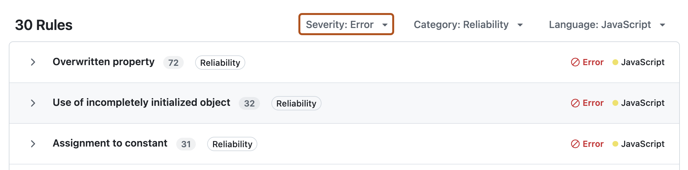
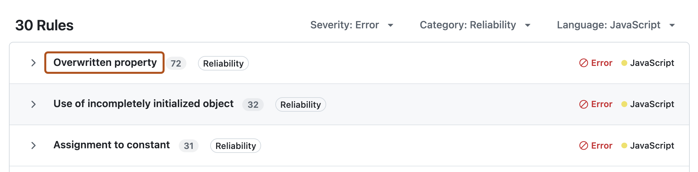
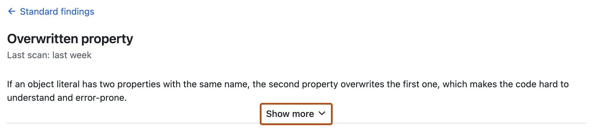

Assess and remediate code quality issues detected on your default branch so you can improve the quality of your codebase. As you progress, you'll see your repository's code quality rating rise as a result.
Note
GitHub Code Quality is currently in public preview and subject to change.
During public preview, Code Quality will not be billed, although Code Quality scans will consume GitHub Actions minutes.
Introduction
This tutorial guides you through using GitHub Code Quality to review, prioritize, and remediate code health issues across your repository — helping you systematically reduce technical debt, improve reliability and maintainability, and communicate your impact to stakeholders.
If you're enabling GitHub Code Quality for the first time, ensure you've waited a few minutes after enablement for a full CodeQL scan of the default branch to complete.
1. Assess your repository's overall code health
Navigate to the Security and quality tab of your repository, then under " Code quality", click Standard findings.
The overview on the "Standard findings" dashboard gives you an immediate assessment of the state of your default branch today:
Maintainability rating reflects the presence and severity of findings for dead code, duplication, complexity, missing documentation, and failure to follow best practices.
Reliability rating reflects the presence and severity of findings for correctness, performance, error handling, concurrency, and accessibility of your code.
2. Identify and prioritize the most impactful findings
On the "Standard findings" view, you'll see the list of results from Code Quality's last scan of the default branch of the repository. These findings are:
Grouped by rule, so you can see which types of problem most affect your codebase.
Assigned a severity level ("Error", "Warning", "Note").
Focus on high severity findings
Use the dashboard filters to focus on the highest-severity results first ("Errors"), and review which rules generate the most issues.

To improve your repository's maintainability or reliability rating, you must resolve (fix or dismiss) all findings with the highest severity level for that metric.
For example, to improve your repository's "Reliability" metric from Needs improvement to Fair, you would need to address and resolve all error-level findings that impact reliability. If you have one or more error-level findings, your rating cannot be higher than "Needs improvement". See Metrics and ratings reference.
3. Investigate a group of findings and understand context
Once you've identified a rule with multiple results that you want to address, you can investigate further to understand the underlying problems.
Click the rule name to be taken to a detailed view of all findings for that rule.

Click Show more, then review the explanation of the rule, what the recommended fix is, supporting code examples and references.

4. Choose remediation options
Evaluate all the highlighted findings for validity, impact, and risk. To improve your quality rating, you need to resolve each finding by either choosing to fix or dismiss it.
Generate an autofix
If the finding looks valid and relevant for your codebase, you can generate a suggested fix.
To the right of an individual finding, click Generate fix.
Review carefully the diff of the proposed change, and if you agree with it, click Open pull request.
In the "Commit autofix to branch" dialog box, select "Open a pull request", then click Commit change.
Tip
It's not currently possible to generate autofixes for a group of findings in bulk.
If you want to address multiple findings with a single pull request, repeat steps 1 and 2 above, then in the "Commit autofix to branch" dialog box, use the branch name you already created for the first autofix, then select "Open pull request" and Commit change.
The fix will be added to the existing draft pull request for your branch.
When you're ready, change the pull request status from "Draft" to "Ready for review", and carefully review the proposed changes. Wait for any CI checks and automated tests to complete and pass before merging the pull request.
Dismiss a finding
You can dismiss a finding if it isn’t relevant or actionable in the context of your codebase. Common reasons to dismiss a finding include:
The finding is in legacy code that’s no longer maintained.
It’s a known exception to your team’s coding standards.
It’s a false positive that doesn’t pose a real quality risk.
Dismissing irrelevant alerts keeps your quality checks focused on meaningful issues.
To dismiss a finding, click .
The finding will disappear from the list of open findings. You can still review and reopen dismissed findings from under the "Dismissed" tab at the top of the page.
5. Measure improvement and communicate impact
After remediation work is complete, return to the "Standard findings" dashboard to review the updated reliability and maintainability metrics.
When communicating your impact to stakeholders, highlight:
Any reduction in the number of findings for "Reliability" or "Maintainability".
Any change in rating for the Reliability or Maintainability ratings.
The requirement(s) that has been met to achieve the change in rating. For example, the remediation of all "Warning"-level findings caused the rating to change from "Fair" to "Good".
Use the improvements in quality ratings and reduction in number of findings to demonstrate progress.
6. Enforce code quality standards for pull requests
If you haven't already, set up quality thresholds for pull requests, to block any changes to the codebase that will reduce the health of your codebase. See Setting code quality thresholds for pull requests.